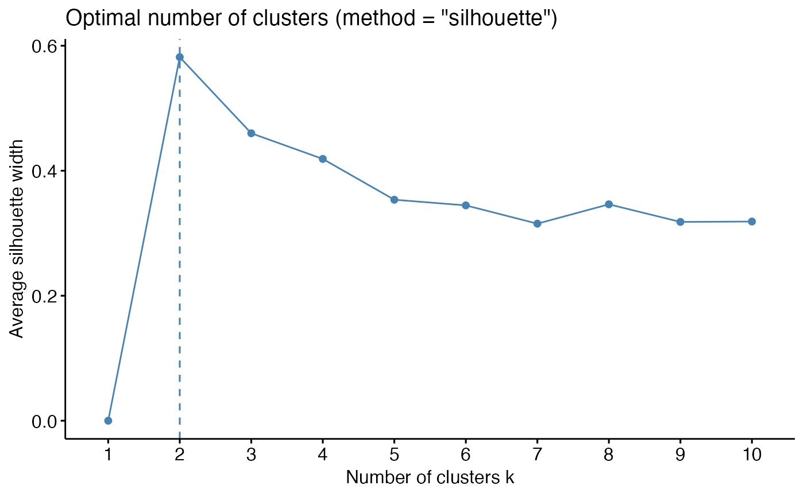
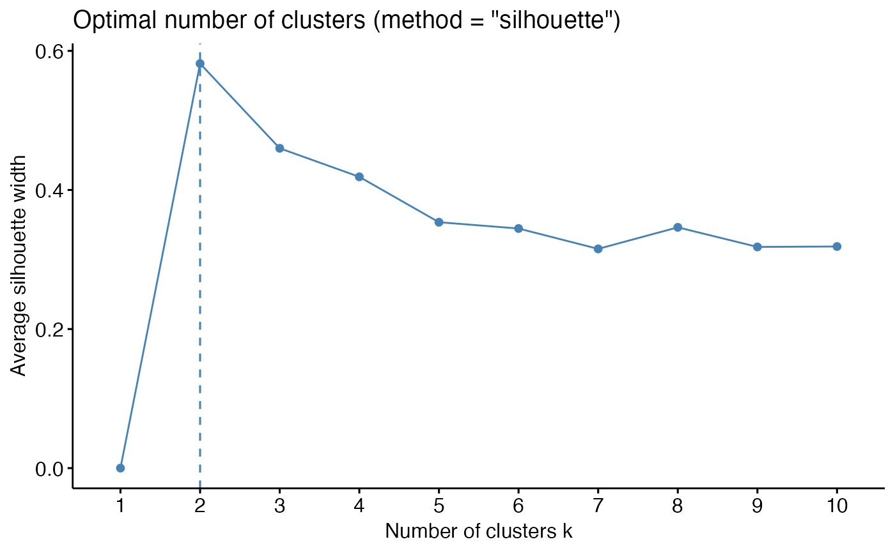

Dertermining and Visualizing the Optimal Number of Clusters
Source:R/fviz_nbclust.R
fviz_nbclust.RdPartitioning methods, such as k-means clustering require the users to specify the number of clusters to be generated.
fviz_nbclust(): Dertemines and visualize the optimal number of clusters using different methods: within cluster sums of squares, average silhouette and gap statistics.
fviz_gap_stat(): Visualize the gap statistic generated by the function
clusGap() [in cluster package]. The optimal number of clusters is specified using the "firstmax" method (?cluster::clustGap).
Read more: Determining the optimal number of clusters
Usage
fviz_nbclust(
x,
FUNcluster = NULL,
method = c("silhouette", "wss", "gap_stat"),
diss = NULL,
k.max = 10,
nboot = 100,
verbose = interactive(),
barfill = "steelblue",
barcolor = "steelblue",
linecolor = "steelblue",
print.summary = TRUE,
...
)
fviz_gap_stat(
gap_stat,
linecolor = "steelblue",
maxSE = list(method = "firstSEmax", SE.factor = 1)
)Arguments
- x
numeric matrix or data frame. In the function fviz_nbclust(), x can be the results of the function NbClust().
- FUNcluster
a partitioning function which accepts as first argument a (data) matrix like x, second argument, say k, k >= 2, the number of clusters desired, and returns a list with a component named cluster which contains the grouping of observations. Allowed values include: kmeans, cluster::pam, cluster::clara, cluster::fanny, hcut, etc. This argument is not required when x is an output of the function
NbClust::NbClust().- method
the method to be used for estimating the optimal number of clusters. Possible values are "silhouette" (for average silhouette width), "wss" (for total within sum of square) and "gap_stat" (for gap statistics).
- diss
dist object as produced by dist(), i.e.: diss = dist(x, method = "euclidean"). Used to compute the average silhouette width of clusters, the within sum of square and hierarchical clustering. If NULL, dist(x) is computed with the default method = "euclidean"
- k.max
the maximum number of clusters to consider, must be at least two.
- nboot
integer, number of Monte Carlo ("bootstrap") samples. Used only for determining the number of clusters using gap statistic.
- verbose
logical value. If TRUE, the result of progress is printed.
- barfill, barcolor
fill color and outline color for bars
- linecolor
color for lines
- print.summary
logical value. If true, the optimal number of clusters are printed in fviz_nbclust().
- ...
optionally further arguments for FUNcluster()
- gap_stat
an object of class "clusGap" returned by the function clusGap() [in cluster package]
- maxSE
a list containing the parameters (method and SE.factor) for determining the location of the maximum of the gap statistic (Read the documentation ?cluster::maxSE). Allowed values for maxSE$method include:
"globalmax": simply corresponds to the global maximum, i.e., is which.max(gap)
"firstmax": gives the location of the first local maximum
"Tibs2001SEmax": uses the criterion, Tibshirani et al (2001) proposed: "the smallest k such that gap(k) >= gap(k+1) - s(k+1)". It's also possible to use "the smallest k such that gap(k) >= gap(k+1) - SE.factor*s(k+1)" where SE.factor is a numeric value which can be 1 (default), 2, 3, etc.
"firstSEmax": location of the first f() value which is not larger than the first local maximum minus SE.factor * SE.f, i.e, within an "f S.E." range of that maximum.
see ?cluster::maxSE for more options
Method selection for gap statistic
The default method "firstSEmax" (developed by Martin Maechler, 2012) is recommended as a robust alternative to "Tibs2001SEmax". The original Tibshirani method can be overly conservative and often returns k=1 when standard deviations are large relative to gap differences. The "firstSEmax" method finds the smallest k within one standard error of the first local maximum, providing more stable results in practice.
Author
Alboukadel Kassambara alboukadel.kassambara@gmail.com
Examples
set.seed(123)
# Data preparation
# +++++++++++++++
data("iris")
head(iris)
#> Sepal.Length Sepal.Width Petal.Length Petal.Width Species
#> 1 5.1 3.5 1.4 0.2 setosa
#> 2 4.9 3.0 1.4 0.2 setosa
#> 3 4.7 3.2 1.3 0.2 setosa
#> 4 4.6 3.1 1.5 0.2 setosa
#> 5 5.0 3.6 1.4 0.2 setosa
#> 6 5.4 3.9 1.7 0.4 setosa
# Remove species column (5) and scale the data
iris.scaled <- scale(iris[, -5])
# Optimal number of clusters in the data
# ++++++++++++++++++++++++++++++++++++++
# Examples are provided only for kmeans, but
# you can also use cluster::pam (for pam) or
# hcut (for hierarchical clustering)
### Elbow method (look at the knee)
# Elbow method for kmeans
fviz_nbclust(iris.scaled, kmeans, method = "wss") +
geom_vline(xintercept = 3, linetype = 2)
 # Average silhouette for kmeans
fviz_nbclust(iris.scaled, kmeans, method = "silhouette")

### Gap statistic
library(cluster)
set.seed(123)
# Compute gap statistic for kmeans
# we used B = 10 for demo. Recommended value is ~500
gap_stat <- clusGap(iris.scaled, FUN = kmeans, nstart = 25,
K.max = 10, B = 10)
print(gap_stat, method = "firstmax")
#> Clustering Gap statistic ["clusGap"] from call:
#> clusGap(x = iris.scaled, FUNcluster = kmeans, K.max = 10, B = 10, nstart = 25)
#> B=10 simulated reference sets, k = 1..10; spaceH0="scaledPCA"
#> --> Number of clusters (method 'firstmax'): 3
#> logW E.logW gap SE.sim
#> [1,] 4.534565 4.745781 0.2112157 0.024271468
#> [2,] 4.021316 4.481045 0.4597287 0.023247363
#> [3,] 3.806577 4.287108 0.4805310 0.022005009
#> [4,] 3.699263 4.138042 0.4387785 0.022976513
#> [5,] 3.589284 4.046911 0.4576270 0.018998839
#> [6,] 3.522810 3.971789 0.4489795 0.013118375
#> [7,] 3.448288 3.906691 0.4584031 0.011975368
#> [8,] 3.379870 3.851128 0.4712584 0.008759733
#> [9,] 3.310088 3.801559 0.4914709 0.007393207
#> [10,] 3.278659 3.757545 0.4788863 0.009164325
fviz_gap_stat(gap_stat)
# Average silhouette for kmeans
fviz_nbclust(iris.scaled, kmeans, method = "silhouette")

### Gap statistic
library(cluster)
set.seed(123)
# Compute gap statistic for kmeans
# we used B = 10 for demo. Recommended value is ~500
gap_stat <- clusGap(iris.scaled, FUN = kmeans, nstart = 25,
K.max = 10, B = 10)
print(gap_stat, method = "firstmax")
#> Clustering Gap statistic ["clusGap"] from call:
#> clusGap(x = iris.scaled, FUNcluster = kmeans, K.max = 10, B = 10, nstart = 25)
#> B=10 simulated reference sets, k = 1..10; spaceH0="scaledPCA"
#> --> Number of clusters (method 'firstmax'): 3
#> logW E.logW gap SE.sim
#> [1,] 4.534565 4.745781 0.2112157 0.024271468
#> [2,] 4.021316 4.481045 0.4597287 0.023247363
#> [3,] 3.806577 4.287108 0.4805310 0.022005009
#> [4,] 3.699263 4.138042 0.4387785 0.022976513
#> [5,] 3.589284 4.046911 0.4576270 0.018998839
#> [6,] 3.522810 3.971789 0.4489795 0.013118375
#> [7,] 3.448288 3.906691 0.4584031 0.011975368
#> [8,] 3.379870 3.851128 0.4712584 0.008759733
#> [9,] 3.310088 3.801559 0.4914709 0.007393207
#> [10,] 3.278659 3.757545 0.4788863 0.009164325
fviz_gap_stat(gap_stat)
 # Gap statistic for hierarchical clustering
gap_stat <- clusGap(iris.scaled, FUN = hcut, K.max = 10, B = 10)
fviz_gap_stat(gap_stat)
# Gap statistic for hierarchical clustering
gap_stat <- clusGap(iris.scaled, FUN = hcut, K.max = 10, B = 10)
fviz_gap_stat(gap_stat)